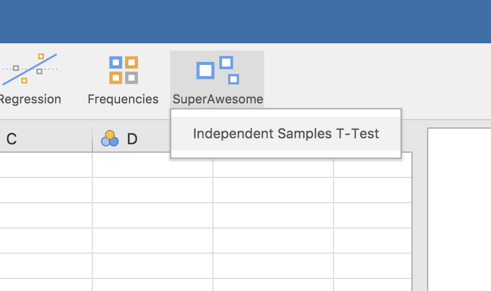

Creating an Analysis
Source:vignettes/dev.jamovi.org-master/tuts0103-creating-an-analysis.Rmd
tuts0103-creating-an-analysis.RmdT-Test
In this section, having previously created a module, we are going to add a t-test analysis to it.
An independent samples t-test is typically used to determine whether two groups differ on some variable. For example, you may be interested in whether children from one neighbourhood are a different height than children from another neighbourhood. In this case, a data set would have one row for each child - one column would contain their heights, the other column would contain which neighbourhood they are from.
For those familiar with the t.test function built into
R, if the columns were height and
neighbourhood, the test could be run:
t.test(height ~ neighbourhood, data=data)In this next section, we are going to create a t-test jamovi analysis which makes use of this function.
Creating an Analysis
The easiest way to begin an analysis for a jamovi module is to use
the addAnalysis() function from the jmvtools
package. First we’ll set the working directory to the
SuperAwesome directory (created by
jmvtools::create() in the previous section), and then call
addAnalysis()
setwd('SuperAwesome')
jmvtools::addAnalysis(name='ttest', title='Independent Samples T-Test')Anatomy of an Analysis
If we now look at the SuperAwesome module’s source tree,
we have:
SuperAwesome/
├── DESCRIPTION
├── NAMESPACE
├── jamovi/
| ├── ttest.a.yaml
| ├── ttest.r.yaml
| ├── ttest.u.yaml
| └── 0000.yaml
└── R/
├── ttest.h.R
└── ttest.b.RAt this point I’m a little embarrassed to say that there are 5 files per analysis. This structure does make things a lot more manageable, so although it may seem excessive at first, there’s a good rationale behind it. Just bear with me, it’s not as overwhelming as it seems.
| file | contains | api |
|---|---|---|
| ttest.a.yaml | The analysis definition contains all the meta information about the analysis, describes the arguments and ui options it receives, etc. We’ll cover this in the tutorial next. | API |
| ttest.r.yaml | The results definition contains all the information about the way the results for the analysis are displayed. | API |
| ttest.u.yaml | The ui definition is automatically generated from the
.a.yaml file. For many analyses this will produce a good
result, and won’t need further editing. |
API |
| ttest.h.R | The header file is automatically generated from the
.a.yaml and .r.yaml files above, and makes
writing your analysis a lot easier. You don’t ever need to look at this
file, and you certainly shouldn’t edit it. |
|
| ttest.b.R | The analysis implementation is where you’ll write your analysis, and where you’ll spend most of your time when developing jamovi analyses. As we’ll see, this is an empty template waiting for an implementation. |
The Analysis Definition
First up, we’ll look at the analysis definition in the
ttest.a.yaml file. yaml is a simple, easy to read text
format for structured data. If you’re new to yaml, you can read more
about the format here,
but that probably won’t be necessary. It’s intuitive and readable, and
you’ll probably have no trouble picking it up.
jmvtools::addAnalysis() creates a default
.a.yaml file with a handful of basic options. Happily for
this tutorial, these happen to correspond to the options that a t-test
requires. Our generated ttest.a.yaml file is as
follows:
---
name: ttest
title: Independent Samples T-Test
jas: "1.1"
version: "1.0.0"
options:
- name: data
type: Data
- name: dep
title: Dependent Variable
type: Variable
- name: group
title: Grouping Variable
type: Variable
- name: alt
title: Alternative hypothesis
type: List
options:
- name: notEqual
title: Not equal
- name: oneGreater
title: One greater
- name: twoGreater
title: Two greater
default: notEqual
- name: varEq
title: Assume equal variances
type: Bool
default: trueAt the top of the file is information about the analysis:
The name is a unique identifier for the analysis, but it also corresponds to the name of the R function which will be made available from the package. As such, the usual constraints on function names apply: it must begin with a letter, and can only be made up of letters and numbers (jamovi disallows analysis names with dots in them).
The title of the analysis is how the analysis appears in menus, help
text, and in the results. Next is the jas or ‘jamovi
analysis spec’; you should just leave this at ‘1.1’. Next, we have the
analysis version. Each analysis is versioned in jamovi, and you should
make use of semantic versioning (but
let’s not worry about that for now).
The options come next; data, dep,
group, alt and varEq. When used
as an R package, these options correspond to the arguments passed to the
analysis R function. In this case they will be:
ttestIS(data, dep, group, alt='not equal', varEq=FALSE)(If you peek inside ttest.h.R, you’ll find this exact
function has been generated.)
When used in jamovi, these options correspond to the UI options for the analysis. Let’s look at that now. Install the module we’ve just created and open up jamovi (or open up jamovi first, then install the module — the order doesn’t matter):
jmvtools::install()(Note that if your module has additional dependencies, these will be
installed by jmvtools::install() at this stage as well. You
can read more about additional dependencies in Additional Notes at the end of
this tutorial.)
The SuperAwesome menu will now be available, and will
contain Independent Samples T-Test.

Selecting this analysis will bring up the UI:

We can see how the UI elements created, correspond to the analyses’
options. Revisiting the dep and group options
from ttestis.a.yaml:
...
- name: dep
title: Dependent Variable
type: Variable
- name: group
title: Grouping Variable
type: Variable
...We see they are of type Variable. This means they
require the user to provide a column from the data set. As can be seen
in the UI, they are represented as ‘drop targets’, where columns from
the data set can be assigned through drag and drop.
Turning to the option alt:
...
- name: alt
title: Alternative hypothesis
type: List
options:
- name: notEqual
title: Not equal
- name: oneGreater
title: One greater
- name: twoGreater
title: Two greater
default: notEqual
...alt is of type list, which has been turned into a drop
down list, allowing the user to choose between the options.
Finally, looking at varEq:
We see that options of type Bool are represented as
checkboxes.
There are a number of different option types. A more comprehensive description of each of them, and their properties is available in the API.
Of course, our analysis doesn’t actually do anything yet – we haven’t written any R code.